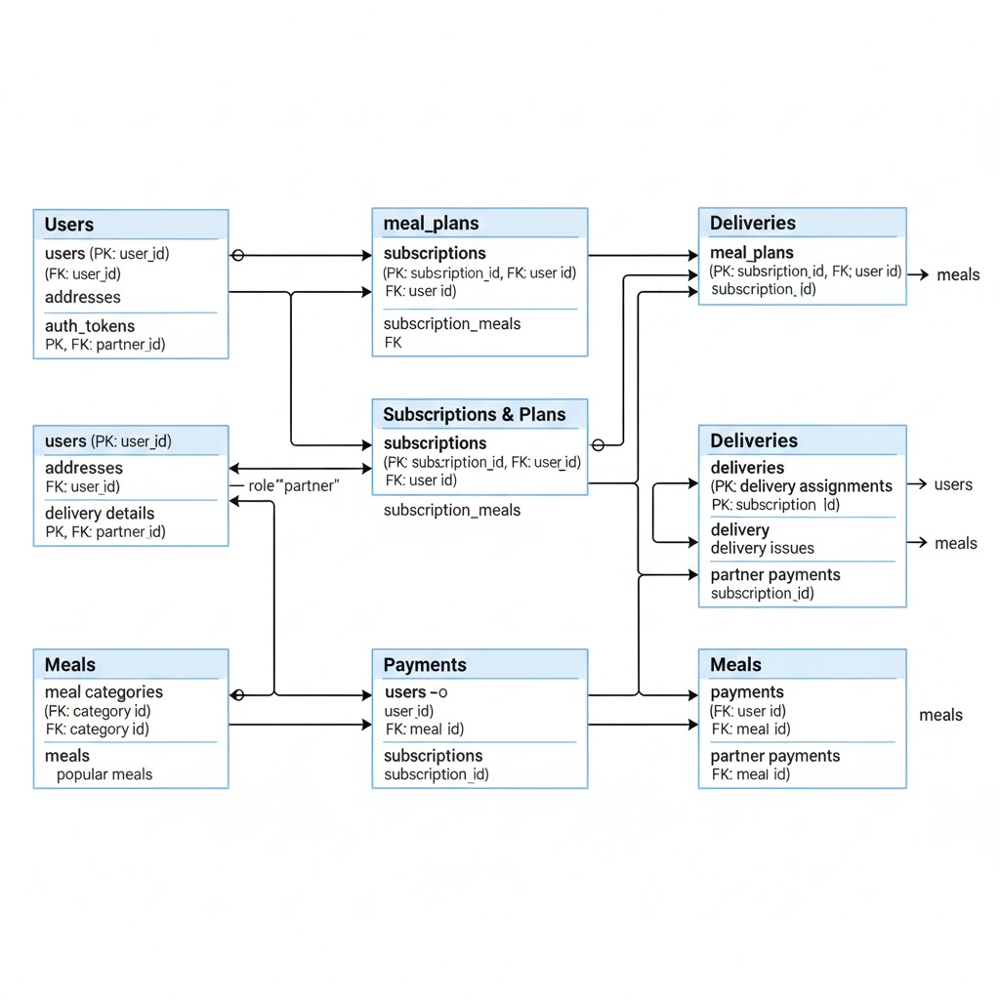

A comprehensive guide to the Tiffinly Food Delivery Platform based on codebase analysis.
Tiffinly is a PHP-based web application designed to manage a meal delivery service. It operates on a subscription model, connecting customers with delivery partners. The platform is divided into three main user-facing sections: a customer portal for ordering and management, a delivery partner dashboard for handling assignments, and an admin panel for complete system oversight.
ajax/cancel_meal.php).manage_partners.php).The application's functionality is segregated by user roles, primarily managed through distinct directories. Each feature is handled by a specific page, providing clear, modular code.
/admin)Provides full control over the platform.
admin_dashboard.php).manage_users.php).manage_partners.php).manage_subscriptions.php, manage_plans.php).manage_menu.php, manage_popular_meals.php).manage_delivery.php, pending_delivery.php)./delivery)Portal for delivery partners to manage their tasks.
partner_dashboard.php).available_orders.php).my_deliveries.php).update_delivery_status.php).earnings.php, delivery_history.php).log_issues.php)./user)Interface for customers to interact with the service.
login.php, register.php).user/browse_plans.php), configuring schedules (user/select_plan.php), customizing meals (user/customize_meals.php), and managing active subscriptions (user/manage_subscriptions.php).user/delivery_preferences.php and cancel individual meals via ajax/cancel_meal.php.forgot_password.php).The application's logic is driven by a relational database. The diagram below illustrates how the primary tables are interconnected.

| Table Name | Purpose & Key Relationships |
|---|---|
addresses | Stores multiple delivery addresses for each user. Linked to users. |
auth_tokens | Supports 'remember me' functionality for user sessions by storing authentication tokens. |
deliveries | Represents a scheduled meal delivery for a subscription on a specific date. This table is used for tracking purposes. |
delivery_assignments | The operational heart of the system. Assigns a specific delivery to a partner, tracking the meal, status, and payment for that assignment. |
delivery_issues | Logs any problems reported by partners regarding a specific delivery assignment. |
delivery_partner_details | Stores partner-specific information like vehicle and license details. Linked one-to-one with users who have the 'delivery' role. |
delivery_preferences | Stores user preferences for delivery times and locations for different meal types (breakfast, lunch, dinner). |
feedback | Stores feedback from users about meals, service, or the platform, including ratings and comments. |
inquiries | Captures messages or contact form submissions from users and tracks the response status. |
meals | Defines all available food items, linked to a meal_category. |
meal_categories | Groups meals by type (e.g., Breakfast, Lunch, Dinner) and dietary option (veg, non_veg). |
meal_plans | Defines the main subscription tiers (e.g., Basic, Premium) with their base price and description. |
partner_payments | Logs payments made to delivery partners for completed deliveries, often containing a transaction reference. |
payments | Records customer payments for their subscriptions, linked to a user and subscription. |
plan_features | Lists the features associated with each meal plan (e.g., "Customizable menu"). |
plan_images | Stores paths to images for each meal plan, used for frontend display. |
plan_meals | Defines the default weekly meal schedule for each subscription plan. |
plan_schedule_options | Defines the pricing multipliers for different subscription durations (e.g., weekdays, full week). |
popular_meals | A simple table to highlight specific meals on the frontend, including a dedicated image and description. |
subscriptions | Links a user to a meal_plan, defining the core details of a customer's service, including start/end dates and status. |
subscription_meals | Stores custom meal selections for a specific subscription, overriding the default `plan_meals`. |
users | Central table for all individuals. Stores credentials, contact information, and their role (user, admin, delivery). |
user/browse_plans.php and configures their subscription (plan type, schedule, dates) in user/select_plan.php.user/customize_meals.php. The finalized plan is saved as a pending subscription.user/payment.php page.active, and a script automatically generates all individual delivery records for the entire subscription period.delivery/available_orders.php page for all delivery partners to see.delivery_assignments for the entire duration of that subscription, linking them to that partner.delivery/my_deliveries.php) to view their assigned deliveries and update their status (e.g., 'out_for_delivery', 'delivered').admin/manage_partners.php page displays a list of all completed but 'unpaid' deliveries, grouped by partner and date. The payment amount is calculated based on logic in admin/process_partner_payment.php, which includes base rates and potential bonuses.partner_payments, and the corresponding `delivery_assignments` are marked as 'paid'.$_SESSION['role']), with checks at the beginning of sensitive files (auth_check.php).$stmt->prepare() and $stmt->bind_param()) to prevent SQL injection attacks, which is a critical security practice.password_hash() and password_verify() for storing and checking user passwords.